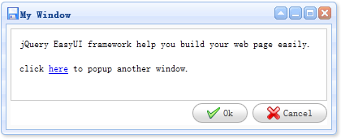

窗口
继承$.fn.panel.defaults，使用$.fn.window.defaults重载默认值。
依赖关系
- 一般拖动
- 缩放
- 控制面板
使用方法
属性
继承控制面板，以下是窗口独有的或者重载控制面板的方法。
| 名称 | 类型 | 描述 | 默认值 |
|---|---|---|---|
| title（标题） | string（字符串） | 窗口的标题。 | New Window |
| collapsible（可折叠） | boolean（布尔型） | 定义是否显示折叠按钮。 | true |
| minimizable（最小化） | boolean（布尔型） | 定义是否显示最小化按钮。 | true |
| maximizable（最大化） | boolean（布尔型） | 定义是否显示最大化按钮。 | true |
| closable（关闭） | boolean（布尔型） | 定义是否显示关闭按钮。 | true |
| closed（已关闭） | boolean（布尔型） | 定义是否在初始化组件时关闭（隐藏）窗口 | false |
| zIndex（堆叠顺序） | number（数字） | 窗口的堆叠顺序，从第一个窗口的zIndex值开始递增。 | 9000 |
| draggable（可拖放） | boolean（布尔型） | 定义窗口是否可以被拖放。 | true |
| resizable（可缩放） | boolean（布尔型） | 定义窗口是否可以被缩放。 | true |
| shadow（阴影） | boolean（布尔型） | 如果设置为true，显示窗口的时候将显示阴影。 | true |
| inline（行内显示） | boolean（布尔型） | 定义如何布局窗口，如果设置为true，窗口将显示在它的父容器中，否则将显示在所有元素的上面。 | false |
| modal（遮罩） | boolean（布尔型） | 定义窗口是否带有遮罩效果。 | true |
事件
事件继承控制面板。
方法
方法继承控制面板，以下是窗口独有的方法。
| 名称 | 参数 | 描述 |
|---|---|---|
| window | none | 返回窗口对象。 |
 |
|
|
|